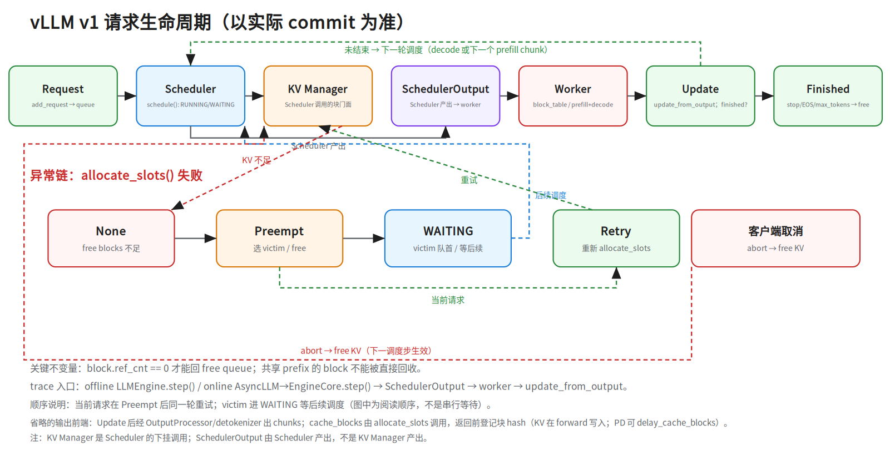

第二十八层 · vLLM v1 源码 trace：一次请求怎么走¶
本层是 M2-3 推理系统的源码补丁：把
notes/22_inference_systems.md的引擎架构落到 vLLM v1 的代码路径。 前置：notes/22 §3–6（KV Cache、PagedAttention、调度、引擎架构）、Python 基础、会跑 vLLM。 重要：源码会变。本文以 vLLM v1 的公开结构为骨架，读之前先钉 commit/tag，不要背行号。
0. 依赖图（学习顺序）¶
flowchart TD
A["推理指标：TTFT/TPOT/吞吐"] --> B["KV Cache / PagedAttention"]
B --> C["Scheduler：谁下一步跑"]
C --> D["KV Manager：块从哪来"]
D --> E["SchedulerOutput：调度器→worker 的契约"]
E --> F["Worker：block_table + prefill/decode"]
F --> G["update_from_output / free"]
G --> H["Preemption：块不够时怎么退"]
H --> I["目标：能沿一次请求追完整条链"]建议 45 分钟路径：§2 钉版本 → §3 文件地图 → §4 正常链 → §5 异常链 → §6 数据结构 → §7 trace 产物 → §8 练习。
前置（按节）：
- §0/§6.3：知道 TTFT/TPOT/吞吐等推理指标（
notes/22 §1）；TP=张量并行、PP=流水线并行、PD=prefill/decode 分离。 - §3–§4：知道 prefill/decode、KV Cache、PagedAttention（
notes/22 §2–5）。 - §5：知道 continuous batching 与 preemption（
notes/22 §4）。 - §7：知道
docs/source-trace-template.md的字段。
1. 为什么读源码¶
面试问“你熟悉 vLLM 吗”，只答“它用 PagedAttention”不够。真正区分人的是：
- 一次请求从哪进、经过谁、在哪结束；
- KV 块什么时候分配、什么时候释放；
- 块不够时谁被抢占、怎么恢复；
- prefix cache 命中在哪一层判断；
- 你改一个参数/策略，会影响哪条路径。
源码 trace 的目标不是“读完 vLLM”，而是能闭卷画出这条链，并回答 3 层追问：机制（谁调谁）、异常（preemption/cancel）、取舍（block_size/版本）。
2. 先钉版本¶
vLLM v0 和 v1 的文件结构差异很大。v0 有 vllm/core/block_manager.py；v1 没有同名类，职责拆到 BlockPool / KVCacheManager / SingleTypeKVCacheManager / KVCacheCoordinator。
开始前记录：
本文以 vLLM v1 为骨架；读的时候以实际 commit 为准。
3. 文件地图¶
| 层 | 文件 | 作用 |
|---|---|---|
| 引擎入口 | vllm/v1/engine/llm_engine.py / LLMEngine |
接收请求、驱动 step()；v1 不再是 v0 的 vllm/engine/llm_engine.py |
| 输出前端 | vllm/v1/engine/output_processor.py + detokenizer |
把 sampled token 变成文本增量/流式 chunk；在引擎前端，不在 scheduler 侧 |
| 调度 | vllm/v1/core/sched/scheduler.py |
选请求、算新 token、触发 preemption |
| 调度输出 | vllm/v1/core/sched/output.py |
SchedulerOutput：调度器→worker 的契约 |
| KV 门面 | vllm/v1/core/kv_cache_manager.py |
get_computed_blocks / allocate_slots / free |
| KV 协调 | vllm/v1/core/kv_cache_coordinator.py |
多 KV group（full/sliding window）协调 |
| 单类型 KV | vllm/v1/core/single_type_kv_cache_manager.py |
单个 attention 类型的块账本 |
| 物理块池 | vllm/v1/core/block_pool.py |
分配/回收/prefix hash/ref_cnt |
| Worker | vllm/v1/worker/gpu_model_runner.py |
执行 forward、更新 block table |
| Block table | vllm/v1/worker/block_table.py |
逻辑块 → 物理块 |
| 设计文档 | docs/design/prefix_caching.md（v0.10.x 有）、docs/design/hybrid_kv_cache_manager.md（目前 main 有，v0.10.x 可能没有） |
先读设计，再读代码；版本不同先确认文件是否存在 |
不要从
vllm/core/block_manager.py开始读 v1；那是 v0 的入口。
3.1 进程架构（v1 和 v0 的关键差异）¶
v1 把调度和前端拆开（以实际版本为准）：
API server / AsyncLLM（frontend，跑在 API 进程）
→ EngineCoreClient（in-process 或 MP client）
→ EngineCoreProc（独立进程，ZMQ input/output socket）
→ Scheduler / KVCacheManager / 每卡 worker（TP/PP）
→ OutputProcessor / detokenizer（frontend 侧）
- EngineCore 独立进程：scheduler 在 EngineCore 里跑 busy loop（
run_busy_loop），通过 ZMQ 收请求/发输出；frontend 做 HTTP/SSE/detokenize。这样调度不被 Python HTTP 前端拖慢。 - worker 进程：每卡一个 worker（TP/PP 组合），通过 executor/消息拿
SchedulerOutput并返回 sampled tokens。 - v0 vs v1：v0 有 swap 队列/换出；v1 默认 recompute、scheduler 无 swap 队列（多序列/beam 等特例可能仍需 swap，以钉住版本为准），所以 v1 的
EngineCore/scheduler 结构更简单。 - 读代码顺序：frontend
AsyncLLM→EngineCoreClient→EngineCore.abort_requests/step→ scheduler → KV manager → worker。
4. 正常链：一次新请求¶

手机版：
../diagrams/28a_vllm_lifecycle.portrait.png
4.1 请求进入¶
add_request()
→ 请求进入 waiting/engine queue
→ EngineCore.step()（offline 经 LLMEngine → client；online 经 AsyncLLM → EngineCoreProc）
step() 是 trace 的起点：它驱动一次调度 + 一次（或多次）模型执行。
4.2 调度¶
scheduler.schedule() 通常分两段：
- RUNNING：已经在跑的请求。为每个请求算
num_new_tokens，调用allocate_slots()；分配失败就触发 preemption。 - WAITING：新请求/被抢占后恢复的请求。先
get_computed_blocks()查 prefix cache 命中，再allocate_slots()。
关键：RUNNING 分配失败才会抢占；WAITING 分配失败通常继续等。
4.3 KV 分配¶
KVCacheManager 是 scheduler 的门面：
get_computed_blocks(request)
→ 查最长 prefix cache 命中（prefix cache 定义见 `notes/27 §4.4`：复用已算前缀的 KV，跳过这段 prefill）
→ 返回 computed blocks，作为 new_computed_blocks 传给 allocate_slots
allocate_slots(request, num_new_tokens)
→ 只为未命中的 token 从 BlockPool 拿新块
→ 分配后、返回前调用 coordinator.cache_blocks(request, num_tokens_to_cache)
登记块 hash（KV 内容在随后的 forward 写入；hash 基于 token IDs）
→ 返回 None 表示块不够
cache_blocks(...) # KVCacheManager 的公开 wrapper，也可被外部调用
→ 把已计算 token 的块登记到 prefix cache；PD 用 delay_cache_blocks 延迟登记
→ 下一请求才能命中
free(request)
→ 请求结束/被抢占时释放
num_new_tokens = 本轮新增 token 数（decode 为 1；prefill 为 chunk 长度）。
BlockPool 负责物理块：
get_new_blocks(n)：从 free queue 取块；必要时驱逐 cached 块；ref_cnt++。free_blocks(blocks)：ref_cnt--；归零才回 free queue。cached_block_hash_to_block：prefix hash → block。
启动时可用 KV 块数：加载权重、激活/通信缓冲、CUDA context 之后，用 profiling run 量剩余显存；num_gpu_blocks = 可用 KV 显存 ÷ 每块字节，其中每块字节 = block_size × 2(K+V) × L × H_kv × d_head × bytes。例：7B GQA-8（L=32, H_kv=8, d_head=128）、block_size=16、FP16，每块 = 16×2×32×8×128×2 = 2 MiB；50 GiB KV 预算 → 25,600 块。gpu_memory_utilization 太低 → KV 预算少、更早 preemption/拒绝；太高 → 启动预分配失败/OOM（headroom 不足）；模型/max_model_len/max_num_seqs 太大也会让可用块变少。若 num_gpu_blocks=0，先看启动日志的可用 KV 显存与块数。
4.4 SchedulerOutput¶
SchedulerOutput 是调度器给 worker 的“任务单”，至少包含：
- 新请求的 block IDs；
- 被恢复请求的 block IDs / computed token 数；
- 总调度 token 数；
- 完成的请求。
面试点：scheduler 管策略（谁跑、跑多少），KV manager 管机制（块从哪来、怎么回收）。不要把两者混成一个“block manager”。
4.5 Worker 执行¶
gpu_model_runner 根据 SchedulerOutput：
- 更新 GPU 侧
block_table（逻辑块 → 物理块）； - 执行 prefill（新请求的 prompt；chunked prefill 时按块）；
- 执行 decode（每步 1 token）；
- 通过 PagedAttention kernel 读写 KV；
- 返回 logits / sampled tokens。
4.6 收尾¶
update_from_output()：
- 处理采样结果；
- 判断请求是否结束（stop string / max_tokens / EOS）；
- scheduler 判定 finished 后，经 OutputProcessor / detokenizer 生成文本增量；
- 流式路径把增量包装成 chunk 出引擎，非流式路径攒到结束再返回；
- 结束则
free()释放块； - 未结束则下一轮继续。
4.7 取消 / abort¶
客户端断开、超时、用户取消时，不能只“停止读响应”。abort 通常在下一个调度步生效，不能打断正在执行的 forward：
客户端取消 / 超时
→ vllm/v1/engine/async_llm.py: AsyncLLM.abort(request_id)
→ vllm/v1/engine/core.py: EngineCore.abort_requests(...)
→ scheduler 标记 finished/aborted，不再分配新 token
→ vllm/v1/core/kv_cache_manager.py: KVCacheManager.free(request)
→ worker 下一调度步停止后续 forward
→ metrics 记录取消原因/已生成 token
关键：取消要释放 KV 块和调度资源；否则高并发下会被“僵尸请求”吃满显存。流式代理要把客户端断连翻译成取消信号，不能只关 socket。
5. 异常链：块不够时怎么退¶
RUNNING 请求 allocate_slots() → None
→ 选 victim（FCFS 取队尾 / priority 按优先级+到达时间）
→ _preempt_request(victim)
→ kv_cache_manager.free(victim)
→ victim 状态 = PREEMPTED，num_computed_tokens = 0
→ victim 放到 WAITING 队首（后续再调度）
→ 当前请求在同一轮立即重试 allocate_slots()（不等待 victim）
版本提示：
_preempt_request是 main 分支抽出的方法；v0.10.x 里抢占内联在schedule()中（running.pop()→PREEMPTED/num_computed_tokens=0→waiting.prepend_request）。按固定版本读时以实际源码为准。
关键不变量：
block.ref_cnt == 0才能回 free queue；- 共享 prefix 的块可能被多个请求持有，不能因为一个请求结束就直接回收；
- 被抢占请求的已计算 token 会丢，恢复时要重新 prefill（或依赖 prefix cache）。
面试追问：
- 为什么 WAITING 分配失败不抢占？因为 RUNNING 已经在执行，抢占成本更高；先让新请求等。
- FCFS 为什么抢“队尾”？FCFS 下队尾是最近才进入 RUNNING 的请求，已投入计算最少，抢占代价最低。
- 抢占一定丢 KV 吗？不一定，取决于块是否被 prefix cache 持有/能否复用。
- 为什么 ref_cnt 重要？它防止“一个请求释放了别人还在用的共享 prefix 块”。
6. 数据结构¶
| 结构 | 关键字段 | 生命周期 |
|---|---|---|
KVCacheBlock |
block_id、ref_cnt、_block_hash、free queue 指针 |
分配 → 使用 → ref_cnt=0 → 回收 |
BlockPool |
free queue、cached hash map | 全局 |
KVCacheManager |
request → blocks、prefix cache 门面 | 请求级 |
SingleTypeKVCacheManager |
req_to_blocks、num_cached_block |
单 attention 类型/请求 |
BlockTable（worker） |
逻辑块位置 → 物理 block_id | GPU 侧，每步更新 |
不变量：
- 一个逻辑块只能映射到一个物理块；
- 一个物理块可被多个请求共享（prefix cache），用
ref_cnt计数； - 只有
ref_cnt == 0的块才能被驱逐/复用； - block table 是 worker 侧视图，scheduler 侧只持有 block IDs。
6.1 prefix cache 的哈希链与 LRU¶
- 写满的块按 前缀 token 的 hash 建索引；命中时从最长前缀开始复用。
cached_block_hash_to_block存 hash → block；free_block_queue近似 LRU。- 复用块
ref_cnt++；请求结束ref_cnt--；只有归零才可驱逐。 - 命中判断在 scheduler 侧（
get_computed_blocks），不在 worker。
6.2 chunked prefill 与本文边界¶
- chunked prefill：把长 prompt 的 prefill 切成多个 chunk，和 decode 交替调度；入口在 scheduler 的 token 预算（
max_num_batched_tokens）分配，不在 attention kernel。vLLM v1 常开，实验里更实际的是调分块粒度，而不是找 on/off 开关。 - 本文不覆盖：PD 分离、KV connector、约束解码、MLA/DeepSeek 专属路径、多模态 encoder。它们各自有独立路径，不要用本文的六步链硬套；投机解码只做 §6.4 的指路。
6.3 block_size 取舍¶
block_size 是 KV 块的粒度：
- 小块：内部碎片上限更小（最后一块最多浪费
block_size-1个 token 的槽），prefix cache 共享粒度更细；但 block table 更大、寻址/调度开销更高。 - 大块：block table 小、寻址快；但内部碎片和 prefix cache 共享浪费变大。
- 调参时看
kv_cache_usage_perc（v1；v0 叫gpu_cache_usage_perc）、preemption 计数（v0 引擎与 v0.11.x 的 v1 看num_preemptions_total；latest v1 看num_preemptions计数器 +request_num_preemptionsper-request 直方图）、TTFT/TPOT 和吞吐，不要只看单请求。指标名随版本变，以实际/metrics为准。
6.4 投机解码：只指路¶
投机解码的源码主链（不做逐行 trace）：
draft/proposer 生成 k 个候选 token
→ target model 一次 verify
→ 接受最长匹配前缀 + 1 个 bonus token（或按拒绝重采样）
→ 更新 KV / 调度下一步
- 入口/文件：v1 的 speculative decoding 在引擎/scheduler 的配置与
vllm/v1/spec_decode/（具体文件随版本变化，以钉住的 commit 为准）；常见配置speculative_model、num_speculative_tokens，调度侧受 token 预算约束。 - 收益条件：接受率 α 高、draft 成本低、并发/延迟有空闲；退化条件：α 低、draft 太贵、verification 抢占算力、高并发下 KV/调度开销上升。大 batch 时 decode 已接近 compute-bound，verify 的算力不再被带宽掩盖，加速比可能 <1；公式是单请求/低并发近似。
- 数值：期望生成 token
E=(1-α^(k+1))/(1-α)（含 1 个 bonus；接受的 draft token 约E−1），加速E/(1+c·k)，见hand-calc #11；概念与取舍见notes/22 §9。
7. Trace 产物¶
按 docs/source-trace-template.md 输出：
每份至少包含：
- 版本/commit；
- 入口/出口；
- 正常链表格（文件 + 符号）；
- 异常链；
- 数据结构与不变量；
- 3 道 quiz；
- 开放问题。
8. 三个练习¶
练习 1：画正常链¶
不看源码，先画：
再打开源码，标出每一步的文件/符号；差异就是学习点。
练习 2：追一次 preemption¶
构造一个块不足的场景（可复现参数示例：7B MHA（LLaMA-2 7B，L=32/H_kv=32/d_head=128，512 KiB/token；和 §4.3 的 GQA-8 例子不同） / 24 GiB 卡，gpu_memory_utilization=0.9、max_model_len=4096、max_num_seqs=8，并发发 6 条 ~3500 token 的 prompt。每请求 KV ≈ 512 KiB × 3500 ≈ 1.71 GiB，6 条约 10.3 GiB；24×0.9−13 ≈ 8.6 GiB 是 KV 上限（未扣激活/CUDA graph），实际以启动日志 Available KV cache memory/num_gpu_blocks 为准；预计第 4–6 条触发 preemption，留 1–2 条余量）。观察 vLLM 日志和 /metrics 的 preemption 指标（v0 引擎与 v0.11.x 的 v1 看 num_preemptions_total；latest v1 看 num_preemptions + request_num_preemptions 直方图，以版本为准）。回答：
- 谁被选为 victim？
- victim 的
num_computed_tokens变成多少？ - 它回到哪个队列？
- 当前请求什么时候重试？
- 共享 prefix 块会不会被误回收？
练习 3：改一个参数¶
选 block_size、max_num_batched_tokens 或 gpu_memory_utilization 之一，回答：
- 影响哪条路径？
- 吞吐/延迟/显存怎么变？
- 怎么用 benchmark 验证？
动手清单（60–90 分钟）¶
| # | 动作 | 产出 / 验收 |
|---|---|---|
| 1 | 画正常链 | 一张图 + 每步文件/符号；能不看源码复述 |
| 2 | 追一次 preemption | 一页 trace：victim、队列、ref_cnt、恢复路径 |
| 3 | 追一次取消 | 一页 trace：取消信号 → free → worker 停止 |
| 4 | 改一个参数 | 用 benchmark 跑 before/after，写 3 行解释 |
| 5 | 写 3 道 quiz | 入口/出口、ref_cnt 不变量、chunked prefill 入口 |
验收：能回答“scheduler 和 KV manager 分工”“为什么 ref_cnt=0 才能回收”“取消为什么必须 free”。
9. 面试要点¶
- vLLM v1 的请求生命周期（能画图）。
- Scheduler 和 KV Manager 的分工。
- PagedAttention 的 block table / ref_cnt / prefix cache。
- preemption 的触发条件、victim 选择、恢复路径。
- 为什么
ref_cnt=0才能回收。 - 改
block_size/gpu_memory_utilization的影响。 - 怎么用 trace 定位“请求慢”是排队、prefill、decode 还是 KV 不足。
10. 常见坑¶
- 用 v0 的
block_manager.py讲 v1。 - 把 scheduler 和 KV manager 说成一个东西。
- 以为 PagedAttention 直接减少 attention FLOPs；它优化的是显存管理。
- 忽略 prefix cache 的共享块和 ref_cnt。
- 只看正常链，不看 preemption/取消/结束。
- 背行号，不记版本。
11. 下一步¶
- 用
/learn-repo在nano-vllm上先跑一遍同样链路，再读完整 vLLM。 - 用
labs/inference-bench/改block_size/ batch，验证你对源码的理解。 - 读
notes/29_agent_eval_infra.md：把推理后端接到 Agent 评测。